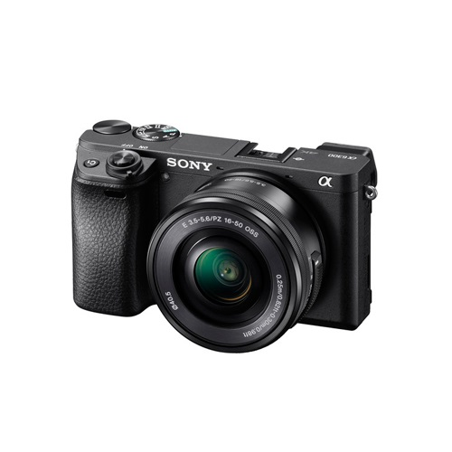

Sony Alpha a6300 Mirrorless con 16-50mm
Q 10,960.00
24.2MP APS-C Exmor CMOS Sensor
BIONZ X
Visor XGA Tru-Finder 2.36m-Dot OLED EVF
Pantalla de 3.0″ abatible LCD
Video UHD 4K a30fps & 1080p a 120fps
S-Log3 Gamma y Display Asistente
Wi-Fi con NFC
4D FOCUS con 425 Puntos de enfoque con Detección de Fase
ISO 100 – 51200
Sony 16-50mm f/3.5-5.6 OSS Zoom Lens
Descripcion
Rapido enfoque y 4K Video, el a6300 de Sony es una camara digital sin espejo versatiles APS-C-formato multimedia diseñado para los creadores de imagenes. Gira en torno a un sensor de 24.2MP CMOS Exmor reconstruido y el procesador de imagen BIONZ X, calidad de imagen limpia esta dotado de una amplia gama de sensibilidades ISO ampliable a 51200, junto con velocidades de lectura acelerados para 4K30 interna y HD 1080p 120fps. Archivos RAW de 14 bits. Como complemento de las dos imagenes fijas y de video, la combinacion del sensor y el procesador tambien aprovecha 4D FOCUS, que combina un sistema de 425 puntos por deteccion de fase de amplia cobertura con un sistema de deteccion de contraste 169-area para una rapida y precisa el rendimiento de enfoque. Este sistema de enfoque tambien permite alta densidad AF de seguimiento de una supervision mas eficaz y preciso de objetos que se mueven a traves del cuadro de imagen. Una cámara bien redondeado, tanto para los fotógrafos y camarografos, la a6300 se caracteriza por su velocidad y se clasifico adicionalmente por su refinada calidad de imagen y vídeo.